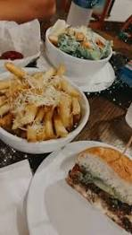

The restaurant is one of the oldest commercial businesses associated with human activity. The more human activity, the more cities developed. The need for a specialized place to serve food and drink has increased. Man cannot perform any activity without energy. Food is the source of energy that provides man with energy needed to do his job. In the past, man did not need to take his food with him, relying on hunting and picking fruits and eating tree leaves. But as man evolved and his diet changed, he began taking food with him to work or to the field. With the changing of man professions and being forced to work away from home. It became necessary to carry his food with him every time he is out to work. Due the age of speed, man does not have time to prepare food. So the only solution is to go to a special place to eat ready food. Diversity of people’s tastes and cultures reflected in restaurants. Where we find restaurants specializing in vegetarian food and others specializing in BBQs and fish and other specialized in pastries. Theories about the origin of modern restaurants differed, but most indicated that the beginning was in France. By Mr. Bolanger. When he and his wife opened their restaurant on the Louvre Street, the lamp trotters with white sauce were his first meal. Many Cookers of the upper class and rich families who lost their jobs after the French Revolution founded news private restaurants. The choices were limited with fixed prices. Serious competition leaded to restaurants development. Each restaurant quickly developed itself and services to acquire customers. As a result, people in France began to enjoy in the restaurants with luxury household appliances, towels, and miscellaneous menus. From France, modern restaurants have spread to all over the world. Today’s, France, especially, Paris are still the destination of those who wish to eat good and luxurious food despite the spread of other types of restaurants such as fast food restaurants launched from USA and Europe throughout the world.
